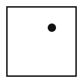
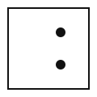
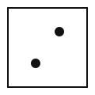

Mock 1 / Reasoning / Answers
Reasoning — Answers
Part II · Q71–100 · 30 marks
View questions without answers
Q.71Select the number that will come next in the series.
3, 7, 15, 31, 63, ?
- 1. 126
- 2. 125
- 3. 129
- 4. 127
Answer: 4 — Each term is ×2 + 1: 63 × 2 + 1 = 127.
Q.72Select the number that will come next in the series.
2, 6, 12, 20, 30, ?
- 1. 40
- 2. 44
- 3. 42
- 4. 36
Answer: 3 — The terms are 1×2, 2×3, 3×4, 4×5, 5×6, so the next is 6×7 = 42. (The differences are 4, 6, 8, 10, 12.)
Q.73Select the term that will come next in the series.
AZ, BY, CX, DW, ?
- 1. EU
- 2. EV
- 3. FV
- 4. EW
Answer: 2 — The first letter moves forward (A, B, C, D, E) and the second moves backward (Z, Y, X, W, V).
Q.74Select the number that will come next in the series.
1, 8, 27, 64, ?
- 1. 125
- 2. 100
- 3. 81
- 4. 216
Answer: 1 — These are cubes: 1³, 2³, 3³, 4³, so the next is 5³ = 125.
Q.75Select the term that will come next in the series.
B2, D4, F6, H8, ?
- 1. I9
- 2. J10
- 3. J9
- 4. K10
Answer: 2 — Letters skip one (B, D, F, H, J) and the number is the letter's position in the alphabet (J = 10).
Q.76In a certain code language, TEACHER is written as UFBDIFS. How will STUDENT be written in that language?
- 1. TUVEFNU
- 2. RSTCDMS
- 3. TUVEFOU
- 4. TUWEFOU
Answer: 3 — Each letter is replaced by the next letter: S→T, T→U, U→V, D→E, E→F, N→O, T→U, giving TUVEFOU.
Q.77If CAT is coded as 24 (the sum of the alphabet positions of its letters), what is the code for DOG?
- 1. 24
- 2. 27
- 3. 26
- 4. 25
Answer: 3 — CAT = 3 + 1 + 20 = 24. DOG = 4 + 15 + 7 = 26.
Q.78In a certain code language, 'sky is blue' is written as 'ta na pa' and 'blue is colour' is written as 'na ka ta'. What is the code for 'colour'?
- 1. ta
- 2. ka
- 3. na
- 4. pa
Answer: 2 — 'is' and 'blue' appear in both sentences, so they are 'ta' and 'na'. The remaining code in the second sentence, 'ka', stands for 'colour'.
Q.79Select the option that is related to the third term in the same way as the second term is related to the first term.
Puri : Jagannath Temple :: Konark : ?
- 1. Lingaraj Temple
- 2. Mukteswar Temple
- 3. Sun Temple
- 4. Tara Tarini Temple
Answer: 3 — Puri is famous for the Jagannath Temple and Konark for the Sun Temple. Lingaraj and Mukteswar are in Bhubaneswar, and Tara Tarini is in Ganjam.
Q.80Select the option that is related to the third number in the same way as the second number is related to the first number.
3 : 27 :: 5 : ?
- 1. 25
- 2. 75
- 3. 125
- 4. 150
Answer: 3 — 27 = 3³, so the answer is 5³ = 125.
Q.81Select the option that is related to the third number in the same way as the second number is related to the first number.
4 : 17 :: 6 : ?
- 1. 37
- 2. 36
- 3. 35
- 4. 38
Answer: 1 — 17 = 4² + 1, so the answer is 6² + 1 = 37.
Q.82Select the odd number from the given options.
- 1. 2
- 2. 5
- 3. 9
- 4. 11
Answer: 3 — 2, 5 and 11 are prime numbers. 9 (= 3 × 3) is not.
Q.83Select the odd one out.
- 1. Mahanadi
- 2. Brahmani
- 3. Narmada
- 4. Baitarani
Answer: 3 — Mahanadi, Brahmani and Baitarani flow through Odisha into the Bay of Bengal. The Narmada flows west into the Arabian Sea.
Q.84Select the odd number pair.
- 1. (6, 30)
- 2. (3, 9)
- 3. (4, 16)
- 4. (5, 25)
Answer: 1 — In the other pairs the second number is the square of the first. 6² = 36, not 30.
Q.85Ravi walks 10 m towards the north, turns right and walks 5 m, then turns right again and walks 10 m. How far and in which direction is he from his starting point?
- 1. 5 m West
- 2. 15 m North
- 3. 10 m South
- 4. 5 m East
Answer: 4 — North 10 m, then east 5 m, then south 10 m. The north and south walks cancel, so he is 5 m east of the start.
Q.86A man facing north turns 90° clockwise, then 180° anticlockwise, and then 45° clockwise. Which direction is he facing now?
- 1. South-West
- 2. North-West
- 3. North-East
- 4. South-East
Answer: 2 — North → 90° clockwise → East → 180° anticlockwise → West → 45° clockwise → North-West.
Q.87In a row of 40 students, Mina is 15th from the left end. What is her position from the right end?
- 1. 26th
- 2. 25th
- 3. 27th
- 4. 24th
Answer: 1 — Position from the right = 40 − 15 + 1 = 26.
Q.88Rohan is 12th from the top and 28th from the bottom in his class. How many students are there in the class?
- 1. 39
- 2. 40
- 3. 41
- 4. 38
Answer: 1 — Total = 12 + 28 − 1 = 39.
Q.89Among P, Q, R, S and T, P is taller than Q but shorter than R. S is the tallest. T is shorter than Q. Who is the shortest?
- 1. Q
- 2. T
- 3. P
- 4. R
Answer: 2 — From tallest to shortest: S > R > P > Q > T. T is the shortest.
Q.90A, B, C, D and E sit in a row facing north. C is in the middle. A is to the immediate left of C, and B is to the immediate right of C. E sits at the right end. Who sits at the left end?
- 1. D
- 2. A
- 3. B
- 4. E
Answer: 1 — From left to right: D, A, C, B, E. D sits at the left end.
Q.91Read the statements and decide which of the conclusions logically follow.
Statements: All teachers are graduates. Some graduates are writers.
Conclusions:
I. Some teachers are writers.
II. Some writers are graduates.
- 1. Only conclusion I follows
- 2. Only conclusion II follows
- 3. Both I and II follow
- 4. Neither I nor II follows
Answer: 2 — 'Some graduates are writers' converts to 'Some writers are graduates', so II follows. The writers who are graduates need not be teachers, so I does not follow.
Q.92Read the statements and decide which of the conclusions logically follow.
Statements: All pens are books. All books are tables.
Conclusions:
I. All pens are tables.
II. Some tables are books.
- 1. Only conclusion I follows
- 2. Only conclusion II follows
- 3. Both I and II follow
- 4. Neither I nor II follows
Answer: 3 — All pens are books and all books are tables, so all pens are tables (I). 'All books are tables' also means some tables are books (II). Both follow.
Q.93Statement: The government has decided to make yoga compulsory in all schools.
Conclusions:
I. Yoga is considered beneficial for students.
II. Students do not like yoga.
- 1. Only conclusion I follows
- 2. Only conclusion II follows
- 3. Both I and II follow
- 4. Neither I nor II follows
Answer: 1 — A decision to make something compulsory implies it is considered useful, so I follows. Nothing in the statement suggests students dislike yoga.
Q.94Statement: Some students of the class are good at mathematics.
Conclusions:
I. All students of the class are good at mathematics.
II. No student of the class is weak in mathematics.
- 1. Only conclusion I follows
- 2. Only conclusion II follows
- 3. Both I and II follow
- 4. Neither I nor II follows
Answer: 4 — 'Some' does not allow us to conclude anything about all the students, so neither conclusion follows.
Q.95How many triangles are there in the given figure?
- 1. 10
- 2. 8
- 3. 14
- 4. 12
Answer: 4 — Four lines meet at the apex (two sides and two inner lines), giving 4C2 = 6 triangles on each of the two horizontal lines (the middle line and the base). 6 × 2 = 12.
Q.96How many squares are there in the given figure?
- 1. 14
- 2. 9
- 3. 10
- 4. 13
Answer: 1 — 9 small (1×1) + 4 medium (2×2) + 1 large (3×3) = 14 squares.
Q.97The given sheet is folded to form a cube. Which number will be on the face opposite the face showing 2?
- 1. 4
- 2. 1
- 3. 5
- 4. 6
Answer: 1 — In a column of four faces (1, 2, 3, 4), alternate faces are opposite: 1–3 and 2–4. The two side flaps are opposite each other: 5–6.
Q.98Select the correct mirror image of the given figure when the mirror is placed at MN as shown.
- 1.
- 2.
- 3.
- 4.
Answer: 3 — A vertical mirror on the right reverses left and right: the order of the characters is reversed AND each character is laterally inverted, with nothing turned upside down.
Q.99A square sheet of paper is folded along the dotted line (left half onto the right half) and a hole is punched as shown. How will the sheet look when unfolded?
- 1.

- 2.

- 3.

- 4.
Answer: 4 — The punch goes through both layers, so on unfolding there are two holes at the same height, mirror images of each other about the fold line.
Q.100Select the figure that will come next in the given series.
- 1.
- 2.
- 3.
- 4.
Answer: 2 — The arrow turns 45° clockwise at each step (up → up-right → right), so the next figure points down-right.